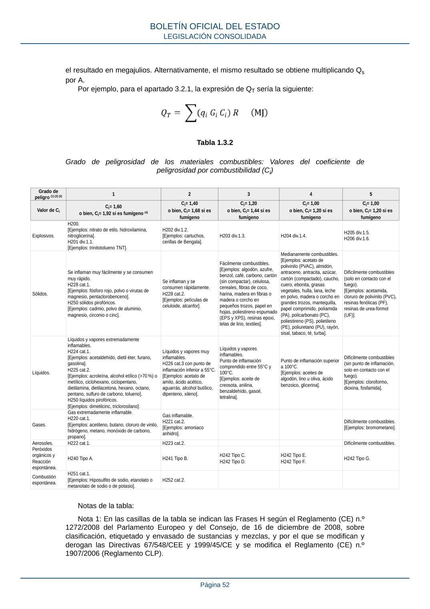

RSCIEI · edición 2025-04-10 · capa asociada
Documento RSCIEI-asociada · SHA-256 del PDF 85aa0af25d51e5b58d8975a4eefbf76d3f57a8933445cfe814ae9c4818a2e3e7
Copia fiel del PDF fuente · Fuente oficial
Ficha de la disposición en la fuente oficial
Texto extraído y reorganizado: Basado en datos de la Agencia Estatal Boletín Oficial del Estado. PDF reproducido: Fuente de los datos: Agencia Estatal Boletín Oficial del Estado.
Formatos: JSON del segmento · Markdown
el resultado en megajulios. Alternativamente, el mismo resultado se obtiene multiplicando Qs por A. por A.
